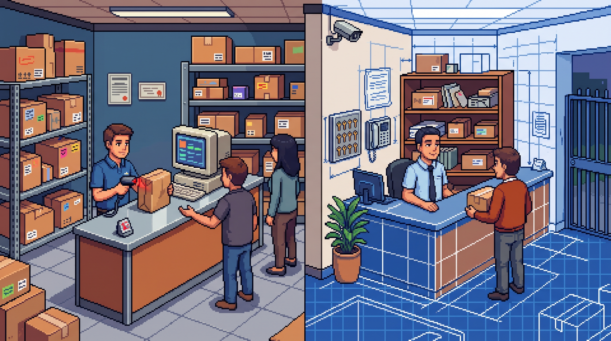

Entre o Balcão e a Portaria: O CaraCore Hub e os Dois Contextos do PUDO
Chega a caixa, há um destino, não basta só empilhar,
tem que saber quem recebe e onde a encomenda vai parar.
No PUDO de marketplace, cada pacote tem posição;
na portaria, outro contexto pede prova e identificação.
Um caminho já é produto, outro aguarda construção:
não se vende como pronto o que ainda é concepção.
Dado local, passo claro, cada entrega em seu lugar;
software honesto sabe o que pode afirmar.
A encomenda precisa de uma história legível
Entre a venda e a retirada existe um trecho que costuma parecer simples: alguém recebe um pacote, coloca-o em algum lugar e espera que a pessoa certa apareça. Na prática, a operação depende de perguntas bem concretas. O que chegou? Onde foi guardado? Quem pode localizar? Como confirmar a entrega?
Um ponto de retirada — PUDO, de pick-up/drop-off — organiza esse intervalo. Não é o marketplace nem o centro de distribuição: é o lugar onde uma encomenda já vendida aguarda a retirada, com registro e posição conhecidos. É nesse recorte que o CaraCore Hub atua.
PUDO Clássico: a operação que já existe
No PUDO Clássico, o Hub atende pontos de retirada que recebem pedidos dos canais operacionais Mercado Livre, Shopee e Temu. As informações podem chegar pelas integrações disponíveis; também existe cadastro manual para situações de contingência. A equipe confere a encomenda, organiza os volumes por posição e usa a busca ou a leitura na etapa de retirada.
O propósito é dar forma ao trabalho do balcão: manter cada pacote localizável e tornar a entrega uma etapa conferida, em vez de depender de memória, papel solto ou uma sequência de mensagens. O Hub roda no computador da operação e guarda seus dados em SQLite local, no modo WAL. A operação local pode continuar offline; buscar novos dados nos serviços externos, naturalmente, depende de conexão.
Esse limite também define o que o produto não promete. O Hub não é um marketplace, uma transportadora, um serviço em nuvem ou uma integração universal com qualquer canal. Amazon e B2W, por exemplo, não são canais operacionais publicados. Dizer isso não diminui o produto: deixa claro onde começa e termina sua responsabilidade.
O que muda quando a encomenda chega à portaria
Um condomínio também recebe pacotes, guarda volumes e os entrega a quem mora ali. A semelhança com o PUDO Clássico é real, mas o contexto é outro. No balcão de retirada, a referência principal é o pedido de marketplace. Na portaria, entram questões como bloco e unidade, troca de turno, quem recebeu o volume e como registrar quem o retirou.
Por isso, a proposta de PUDO Condomínio não é simplesmente trocar o nome de alguns botões. O desenho prevê adaptar a entrada de encomendas à rotina da portaria — por leitura de etiqueta ou cadastro manual — e tratar a identidade do morador, a posição de guarda, os avisos e a prova de custódia como partes explícitas da jornada. A proposta não prevê uma API de transportadora na primeira etapa.
Essas são necessidades e decisões de produto, não uma lista de recursos já disponíveis. A leitura de etiqueta no recebimento, o registro completo da custódia condominial, os avisos contextualizados por unidade e uma comprovação mais forte dependem de implementação e validação. O PUDO Condomínio continua em planejamento; não deve ser anunciado como funcionalidade pronta nem como piloto já contratado.
Um produto, operações distintas — sem central compartilhada
A visão de produto é evoluir o Hub com dois perfis de operação, sem criar um fork: PUDO Clássico para pontos de retirada de pedidos de marketplace e PUDO Condomínio para a rotina de encomendas na portaria. A ideia é reaproveitar o que faz sentido — posição, estoque e etapas de guarda e retirada — e adaptar a entrada, o vocabulário e a identidade do destinatário.
Há uma fronteira importante nesse desenho: cada instalação atende uma operação. A proposta não equivale a uma base compartilhada nem a um painel central para várias administradoras ou condomínios. Uma futura operação condominial teria sua própria instalação local; qualquer expansão além disso exigiria decisões e validações adicionais.
Essa separação ajuda a evitar uma confusão comum: compartilhar uma lógica de produto não significa misturar clientes, dados ou rotinas. Para quem trabalha na portaria, a interface precisa falar a língua da encomenda condominial. Para quem opera um ponto de retirada, deve continuar clara a jornada dos pedidos de marketplace. O software pode ter um núcleo comum sem fingir que os dois trabalhos são idênticos.
Autonomia também é explicar dependências
A base local do Hub reduz a dependência de uma sessão permanente em nuvem para a operação registrada no computador. Não elimina, porém, todo requisito de conectividade: integrações externas precisam de rede para buscar informações, e recursos futuros de comunicação também devem declarar seus próprios limites. “Offline” não quer dizer que qualquer etapa remota aconteça sem internet.
Na stack pública do Hub, Java 25, Jakarta EE 10 e Tomcat 10.1 sustentam uma aplicação logística com dados locais. Essa escolha tem valor quando a prioridade é manter a rotina compreensível e próxima de quem opera. Também exige backup, controle de acesso e cuidado com o computador onde os dados ficam; autonomia não é sinônimo de proteção automática.
Roadmap não é oferta
O PUDO Clássico mostra uma aplicação concreta da ideia: receber pedidos já vendidos, organizar sua guarda e registrar a retirada. O PUDO Condomínio aponta para uma possibilidade de evolução, com outro comprador, outro vocabulário e exigências próprias de custódia. Entre a tese e a oferta há trabalho: implementar, medir, testar em uma operação real e comunicar com precisão o que passou a existir.
Essa distinção protege quem compra e quem constrói. O morador não recebe uma promessa de aplicativo que não existe; o síndico não confunde um plano com uma operação homologada; e o porteiro não precisa reorganizar a rotina em torno de uma função ainda não entregue. Quando o estado mudar, a comunicação também deverá mudar — apoiada por evidência, não pela ilustração de uma capa.
Um bom sistema de logística não precisa prometer que controla toda a última milha. Precisa tornar seu trecho visível, manter cada encomenda localizável e deixar claro o que acontece em cada passagem. No balcão ou, no futuro, em uma portaria, a confiança começa por uma história que pode ser conferida.
O que é produto e o que ainda é proposta
O PUDO Clássico já opera com canais publicados, cadastro manual, organização por posição e dados SQLite locais. A operação local pode funcionar offline; integrações externas dependem de conexão.
O PUDO Condomínio é uma proposta em planejamento, não uma função disponível. Leitura na entrada, identidade por unidade e custódia condominial precisam ser implementadas e validadas antes de qualquer promessa comercial.
Hashtags
Contato e Links
- CaraCore Hub: hub.caracore.com.br
- Empresa: Cara Core Informática
- E-mail: suporte@caracore.com.br
- LinkedIn: Cara Core Informática
Conheça o CaraCore Hub e confira na loja a versão e a disponibilidade atuais.
Conhecer o CaraCore Hub
Artigo publicado em 25 de agosto de 2027
© 2027 Cara Core Informática. Todos os direitos reservados.